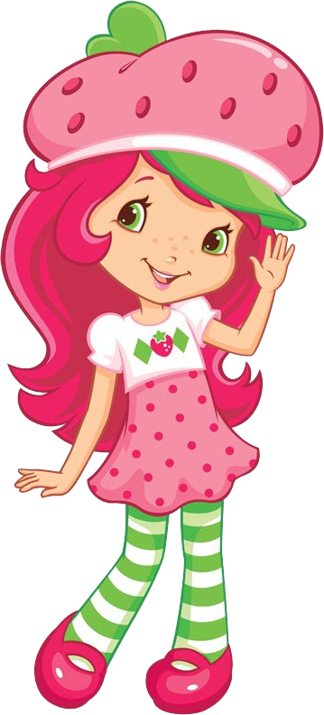
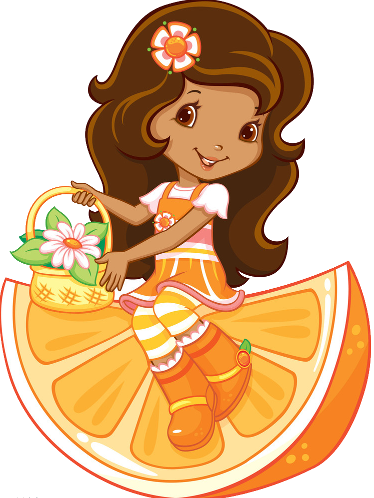
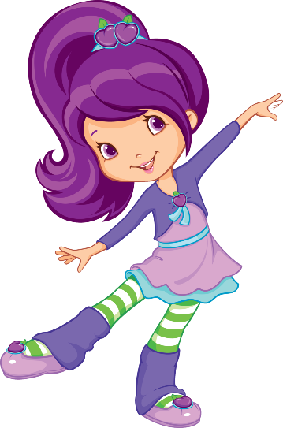

MORANGUINHO
Moranguinho vive na "Terra do Morango" e tem vários amigos, como Blueberry Muffin e Raspberry Torte. Além dos desenhos animados, o personagem também aparece em brinquedos, roupas e filmes, mantendo sua popularidade entre as crianças.

LARANJINHA
Laranjinha tem cabelo laranja e frequentemente é vista usando roupas em tons de laranja e amarelo. Ela tem um visual alegre e vibrante, refletindo seu nome e personalidade.

TORTINHA DE LIMÃO
Tortinha de Limão, conhecida como Lemon Meringue, é uma das amigas da Moranguinho. Ela é a expert em beleza do grupo, sempre atenta ao estilo e com um toque fashion. Dona de um spa, Tortinha adora cuidar das amigas e valoriza a autoestima e o bem-estar. Vaidosa e alegre, ela está sempre pronta para oferecer conselhos de moda e mostrar a importância de se cuidar e de apoiar as pessoas ao redor.
.png)
AMEIXINHA
Ameixinha (ou Plum Pudding) é a amiga dançarina da Moranguinho. Com seu cabelo roxo e energia vibrante, ela adora ensinar dança e compartilhar sua paixão com as amigas. Generosa e sempre pronta para ajudar, Ameixinha é uma personagem que inspira confiança e amizade, mostrando a importância de expressar quem somos através da arte.

AMORA LINDA
Amora Linda (Blueberry Muffin) é a amiga estudiosa da Moranguinho. Sempre com seu cabelo azul e um livro em mãos, ela adora aprender e ajudar as amigas com seu conhecimento.